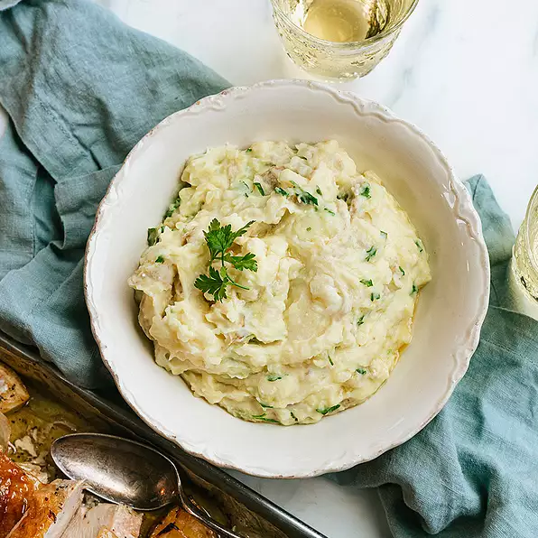

Mashed Potatoes

Description
How can you go wrong with a side of mashed potatoes. Sometimes it can even
be it's own meal if you want.
There's not a whole lot more I can really say. Let's dive in.
Ingredients
- 8 large potatoes
- 1/2 cup of softened butter
- 1/2 cup shredded parmesan cheese
- 1.5 cups of buttermilk
- 1 cup of heavy cream, or more to taste
- 1 bunch flat leaf parsley, roughly chopped
- 1 teaspoon kosher salt
Steps
-
Slice all potatoes in half, place in a large pan, and cover with cool
water.
-
Bring to a boil for 25 to 35 minutes or until potatoes are tender enough
to mash.
-
Drain water and add remaining ingredients. The parsley cooks slightly
with the heat of the potatoes.
- Mash by hand or with a hand mixer.
- Add salt to taste
- Enjoy!